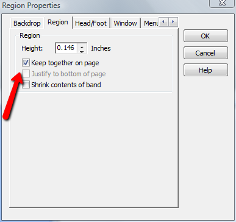

How to fix incorrect report page totals
Sometimes when you create a multi-page report in Alpha Anywhere, you discover that the page totals don't match the sum of the amounts visible on the page. This can happen if there is vertical space above the location of the page total, and the next item in the report, which actually appears on the next page, is included in the current page because its detail region has been split.The way to fix this is to bring up the detail region properties by right-clicking on the detail region band and check "Keep together on page". Then the region will never be split, and the page total will always match what's visible on the page.
